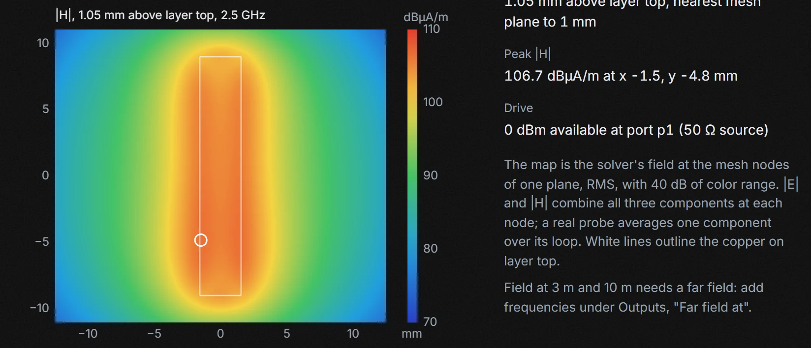
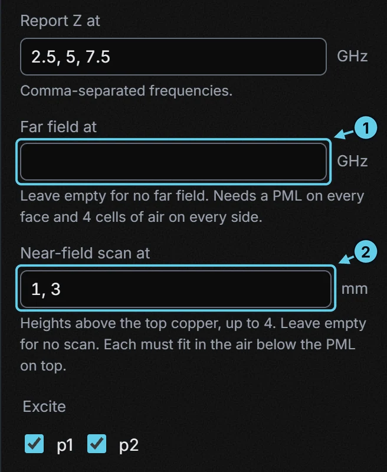
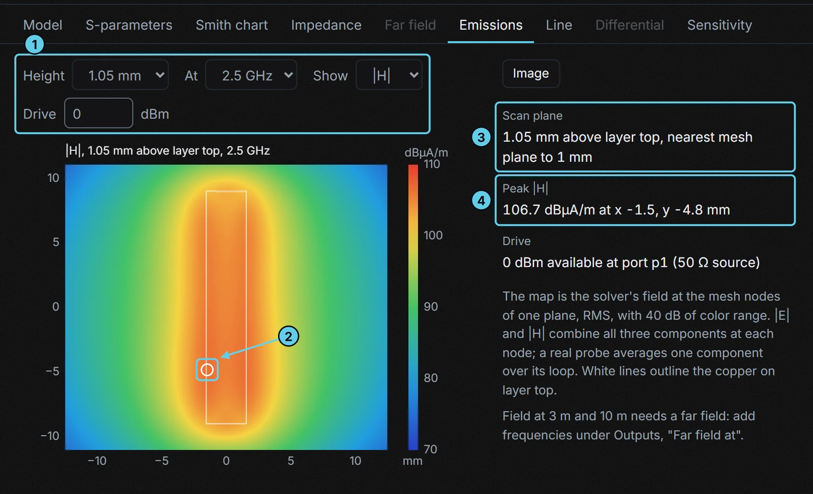
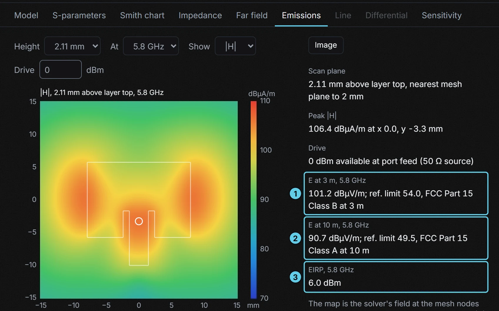

Near-field scans and emissions from a PCB
NobuRF's Emissions tab maps the field just above a board, the way a near-field probe would, and from a far field it estimates the field at 3 and 10 m. Use it to see where a board radiates and how a layout change moves that. It isn't a compliance test.

Scan the field over a trace, step by step
Start from the 50 Ω microstrip line on the PCB simulation page: New, Microstrip line, 5 GHz, FR-4, 1.6 mm. Any board with ports works the same way.
-
Ask for a scan
In the project tree, open Setup, then Analysis and outputs. Set the scan before you solve, because the solver records the field on each plane as it runs.
- Far field at: leave it empty for a scan alone. A far field is what the field at 3 and 10 m needs, further down.
- Near-field scan at: up to four heights above the top copper, in mm. Here 1 and 3.

-
Read the map
Press Solve, then open the Emissions tab. It offers the frequencies listed under "Report Z at" and "Far field at".
- The scan height, the frequency, the field to show (|H|, |E| or one component) and the drive in dBm.
- A ring marks the peak.
- The scan plane: 1.05 mm, the mesh plane nearest the 1 mm asked for.
- Peak |H|: 106.7 dBµA/m, with 0 dBm available at port p1.



The solve is linear, so the map scales with the drive you type, decibel for decibel. |E| and |H| combine all three components at each mesh node, while a real probe averages one component over its loop, so compare the map with a probe scan for where the hot spots are rather than for the exact level.
Field at a distance
-
Read the field at 3 and 10 m
Choose Examples, patch-5g8-far-field.json, a 5.8 GHz patch antenna that already asks for a far field and for scans 2 and 5 mm above the board. Solve it and open Emissions. With a far field, the tab adds the field at 3 and 10 m and the EIRP.
- E at 3 m: 101.2 dBµV/m, beside the FCC Part 15 Class B limit at 3 m, 54.0 dBµV/m, for reference.
- E at 10 m: 90.7 dBµV/m, beside the Class A limit at 10 m, 49.5 dBµV/m.
- EIRP: 6.0 dBm, from 0 dBm available at the port and a realized gain of about 6 dBi.


The figures follow from the EIRP: 4 mW radiated from an isotropic point gives 101.2 dBµV/m at 3 m. They are far over the limits because a patch antenna is built to radiate. The Part 15.109 limits are for unintentional emitters such as digital boards, so here they only show the scale.
Why it isn't a compliance result
- The source is a port you place. A real board's emission comes from its signals' spectrum and its return paths, not a 0 dBm sine at one port.
- Cables and enclosures aren't modeled, and cables often radiate more than the board they connect to.
- The field at a distance assumes free space and the direction of peak gain. Below 1 GHz, a test site's ground plane can add up to 6 dB.
What it is good for is comparison: the same drive on two versions of a layout, before and after a change to the routing, the ground or the stitching vias. The near-field transform is checked against closed forms and against the far field in section 4.5 of the validation report.